Configuración y mantenimiento del sistema¶
Puede estar desactualizado
Varias de estas pantallas documentan rutas de archivo y comandos de una instalación de referencia antigua (por ejemplo /var/www/html/asterCC/, astercc10 como nombre de base de datos). Verifica las rutas reales de tu instalación antes de ejecutar cualquier comando.
Qué es¶
El menú Sistema (y Módulos del sistema) agrupa las pantallas de administración de la plataforma AsterCC en sí — no de la operación del call center. Cubre: programar respaldos automáticos y consultar los archivos ya respaldados, ejecutar comandos de Asterisk y revisar el log del núcleo, limpiar tablas temporales de llamadas con datos corruptos, configurar red, dar de alta servidores PBX adicionales, definir el plan de retención/archivado de grabaciones, ajustar parámetros generales del sistema (SIP, negocio, facturación, retención de datos), administrar códigos de función (hotkeys de teléfono), gestionar la estructura del menú lateral, y actualizar/instalar módulos del sistema.
Es contenido operativo/administrativo de la plataforma, distinto de los módulos funcionales de la sección 4 (PBX y telefonía, marcador, etc.) — por eso vive en la sección 6, Administración avanzada.
Cómo se usa¶
Planes de respaldo (Backup Plans)¶
Ve a Configuración de sistema → Gestión de planes de respaldo. Sirve para respaldar periódicamente archivos del sistema y la base de datos, con opción de enviar el respaldo por FTP a otro servidor.
| Campo | Qué define |
|---|---|
| Nombre del plan | Identifica el propósito del respaldo |
| Estado | Si el plan está activo (solo los planes activos se ejecutan) |
| Mes / semana / día / hora / minuto | Programación tipo cron; "Todos" en cualquier campo significa "cada valor posible" de esa unidad |
| Días de retención del archivo de respaldo | Cuánto se conserva el respaldo en el servidor antes de eliminarse automáticamente (recomendado 3-7 días por espacio en disco) |
| Envío FTP (activar/dirección/usuario/contraseña/ruta) | Copia adicional del respaldo a otro servidor — el respaldo local se conserva igual, según los días de retención configurados |
| Contenido a respaldar | Lista de directorios del sistema, uno por línea (hay accesos directos para autocompletar rutas clave) |
| Bases de datos a respaldar | Una por línea, formato nombre_bd,usuario,contraseña (si no hay contraseña, se deja vacía después de la coma) — por defecto la base de datos del sistema es astercc10 con usuario root |
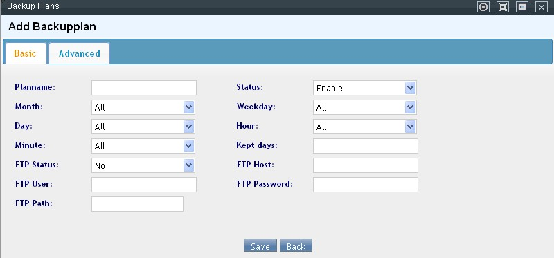
Ejemplos de programación: mes=todos, semana=todos, día=todos, hora=0, minuto=0 ejecuta el respaldo diario a medianoche; mes=todos, semana=domingo, día=todos, hora=2, minuto=0 ejecuta el respaldo cada domingo a las 2am.
Archivos de respaldo (Backup Archives)¶
Ve a Sistema → Archivos de respaldo. Es la pantalla donde se ven los respaldos ya generados (según la configuración del archivo de configuración del sistema, no del plan anterior) y desde donde se pueden descargar, eliminar o restaurar.
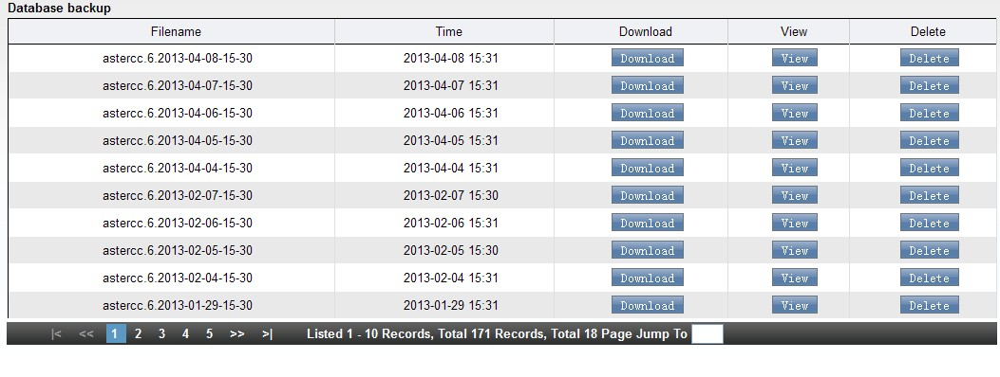
- Al restaurar, el sistema pide elegir qué restaurar: base de datos, configuración de Asterisk, archivos de voz (selección única o múltiple).
- Restaurar la base de datos crea una base de datos nueva — no borra la original.
- El botón Restaurar solo está habilitado si la versión del archivo de respaldo coincide con la versión actual del sistema.
- Después de restaurar hay que cerrar sesión y volver a entrar.
Warning
Antes de restaurar, confirma que ningún usuario del sistema está en llamada o trabajando activamente, para evitar pérdidas.
Comandos del núcleo (Core Cmd)¶
Ve a Sistema → Comandos del núcleo. Permite ejecutar directamente comandos de consola de Asterisk desde el navegador (por ejemplo core show calls) y ver el resultado en pantalla. Pensado para quien ya conoce los comandos de Asterisk.
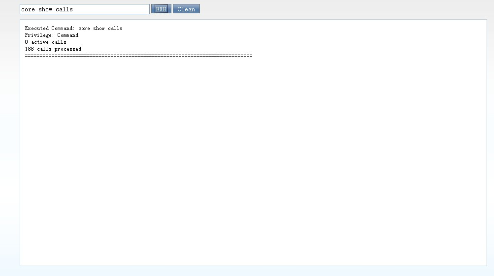
Log del núcleo (Core Log)¶
Ve a Sistema → Log del núcleo. Muestra el log del kernel/núcleo del sistema relacionado con Asterisk, útil para diagnóstico.
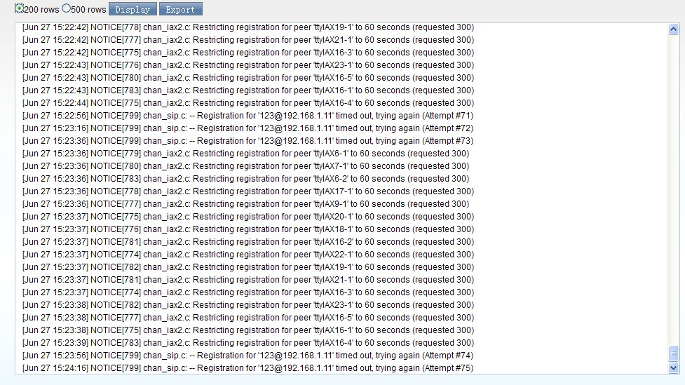
Limpieza de tablas temporales de llamadas¶
Dos pantallas para depurar datos corruptos que pueden quedar por problemas de línea o caídas del servidor:
- Curpbxcdr Subs (
Sistema → Curpbxcdr Subs): tabla temporal que registra datos en tiempo real de las llamadas en curso. Problemas de línea o fallas de fuerza mayor pueden dejar registros corruptos que afectan el trabajo del agente — se pueden eliminar aquí. Antes de eliminar, confirma que el agente involucrado no está en llamada y que ya pasó al menos 1 minuto. Un agente con permisos también puede eliminarlos desde su plataforma de trabajo; sin el permiso, la plataforma le pide la cuenta y contraseña del jefe de grupo. En el backend, jefes de equipo y administradores de sistema tienen permiso de eliminar. - Curspools (
Sistema → Curspools, manejo de errores de marcación): si el proceso del sistema se cae o hay problemas de línea, números pendientes de marcar pueden quedar retenidos sin limpiarse, y el agente ve el mensaje "no marcar de nuevo" al intentar llamar. Antes de eliminar el registro erróneo, confirma que fue creado hace más de 1 minuto y que el agente no está en llamada con ese cliente.
Idiomas (Language)¶
Ve a Sistema → Idioma. Controla qué idiomas puede usar el sistema (menús, IVR, correo, etc.). El sistema trae 8 idiomas predefinidos que no deben eliminarse — hacerlo puede provocar comportamiento anómalo.
| Campo | Qué define |
|---|---|
| Idioma | Nombre para identificar el idioma |
| Código | Código de referencia del idioma |
| Página de login | Si ese idioma puede seleccionarse desde la pantalla de inicio de sesión |
| Nota | Descripción libre |
Red (Network)¶
Ve a Sistema → Red para configurar la red del sistema:
- NETWORK: parámetros generales de red del servidor.
- DNS: agrega servidores DNS con el botón correspondiente.
- ETH: agrega sub-interfaces a
eth0y edita los parámetros de cada interfaz de red.
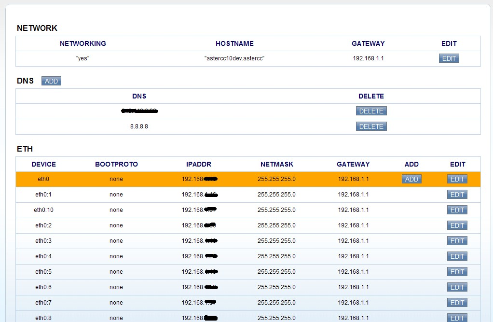
Servidores PBX (PBXs)¶
Ve a Sistema → Servidores PBX. Da de alta los servidores PBX (Asterisk) que administra AsterCC — relevante en instalaciones con más de un servidor PBX.
| Campo | Qué define |
|---|---|
| Nombre del servidor | Identifica el servidor |
| Dirección IP del servidor | IP donde corre ese PBX |
| Cuenta / contraseña / puerto AMI | Credenciales de conexión AMI a ese servidor específico |
| Extensiones registradas actualmente | Solo lectura — cuántas extensiones están registradas en ese servidor |
| Extensiones en llamada actualmente | Solo lectura — cuántas extensiones están en llamada en ese servidor |
| Estado | Estado del servidor PBX |
| Notas | Observaciones libres |
Doble clic sobre un registro para editarlo.
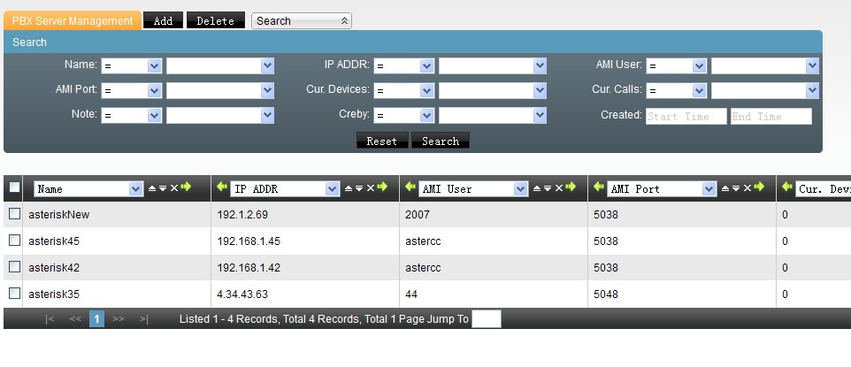
Plan de grabaciones (Recording Plan / Backup Monitor)¶
Ve a Configuración de sistema → Gestión de archivos de grabación. Define cómo se archivan o eliminan las grabaciones de llamada para no agotar el espacio en disco.
| Campo | Qué define |
|---|---|
| Equipo | A qué equipo aplica el plan (cada equipo necesita su propio plan) |
| Estado | Si el plan está activo |
| Días de retención de grabación | Cuántos días se conserva la grabación en el sistema antes de procesarse (transferir o eliminar) |
| Hora de ejecución | A qué hora del día corre el proceso (recomendado en horas de baja actividad) |
| Procesamiento de grabación vencida | Transferir (mover a un disco montado) o Eliminar (borrar definitivamente) |
| Ruta de transferencia | Ruta absoluta del disco montado, si se eligió transferir |
| Empaquetar archivo transferido | Si se comprime en .tar.gz al transferir — ahorra espacio pero impide reproducir/descargar esas grabaciones desde la web |
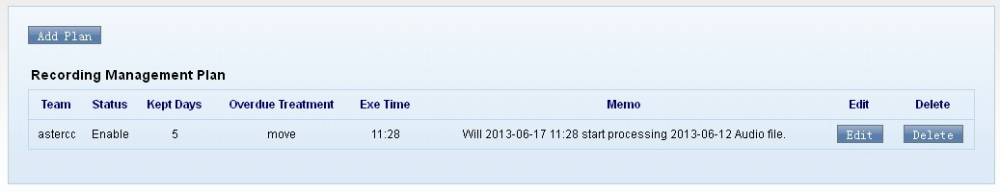
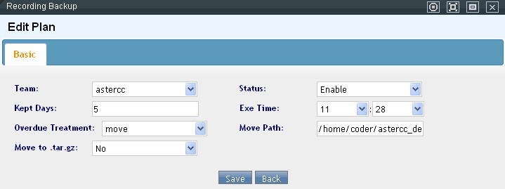
Tip
Con múltiples equipos, escalona la hora de ejecución de cada plan (recomendado 1 hora de diferencia) porque el sistema procesa un plan a la vez por franja horaria.
Ruta de grabaciones del sistema: /var/spool/asterisk/monitor/{id_equipo}/{año}/{mes}/{día}/archivo.wav.
Configuración general (Settings)¶
Ve a Sistema → Configuración. Agrupa parámetros generales en varios bloques:
| Bloque | Contiene |
|---|---|
| Parámetros de negocio | Límite diario de SMS/Email por destinatario |
| Facturación | Activar facturación, día de generación y de corte del ciclo, día límite de pago, tasa de interés por mora |
| SIP general | allowguest, tos_sip/audio/video, trustrpid, sendrpid, videosupport, externip/externhost/externrefresh, localnet, realm, bindport, bindaddr, rtpkeepalive, rtptimeout, useragent, srvlookup — parámetros estándar de sip.conf/pjsip.conf de Asterisk |
| Procesamiento de grandes datos | Días/meses de retención de: tabla actual e histórica de CDR, work orders recién completados, historial de contacto de equipo, datos de e-commerce, datos estadísticos, logs de sistema y de eventos de agente |
| Configuración básica del sistema | Expansión automática del panel de búsqueda, filas por página, activar Google Maps (desactivar si el sistema no tiene internet — consume recursos y puede bloquear al agente), modo de notificación de tareas, popup automático de plataforma de agente, modo de login, restricción de sesión simultánea por cuenta, ruta FTP de archivos de voz, cifrado MD5 de contraseña de extensión, límite de uso de extensión, formato de duración (hh:mm:ss o segundos), formato de exportación (xls/csv/ambos), paginación de exportación, horario mínimo permitido para exportar, codificación del archivo exportado (UTF-8/ANSI), modo del panel de avisos (ventana emergente o botón parpadeante) |
| Configuración avanzada | Dominio de login de usuario vs. de agente (permite dos URLs distintas para backend y plataforma de agente en el mismo navegador), restricción de acceso por rango de IP, método de push de eventos (HttpPush vs. comet), URL de HttpPush (por defecto http://127.0.0.1/agentindesks/pushagent), nombre de cliente con licencia, idioma por defecto del sistema, idioma por defecto de IVR entrante, modo de marcación, modo realtime de Asterisk, reinicio automático de servicio programado, equipo por defecto, descarga de grabaciones vía web, compresión de grabaciones, descarga automática de paquetes de actualización |
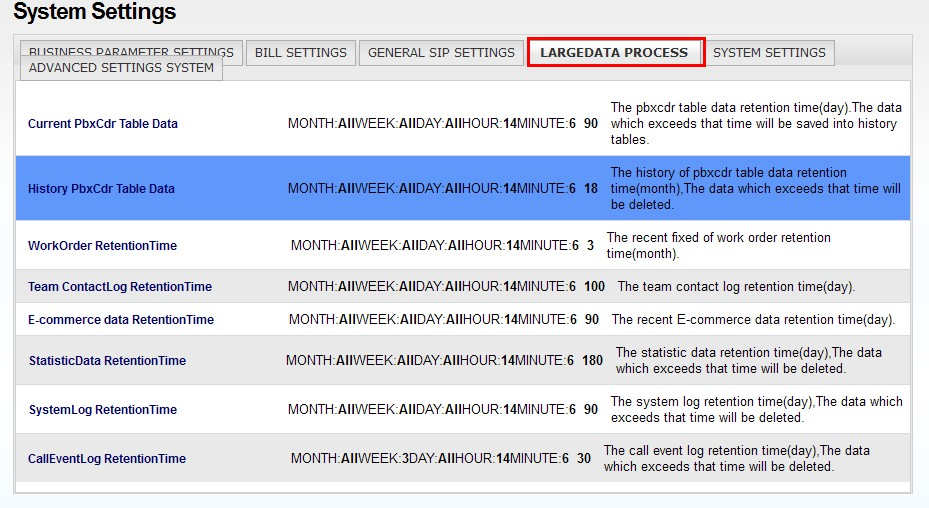
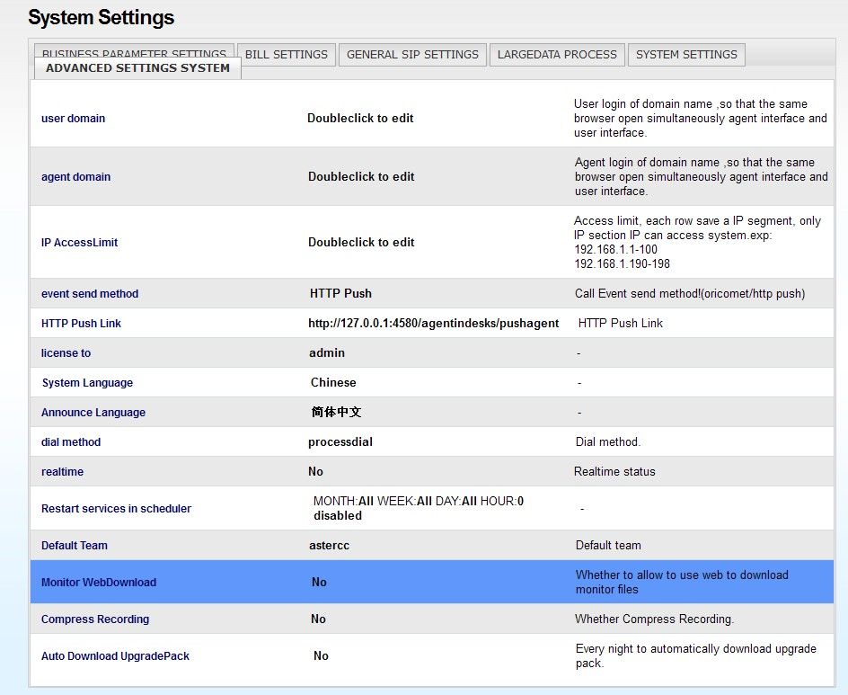
Warning
Una URL de HttpPush mal configurada impide que la plataforma de agente reciba el popup de llamadas entrantes.
Códigos de función (Feature Codes)¶
Ve a Configuración de sistema → Teclas rápidas del sistema. Administra dos tipos de códigos:
- Teclas rápidas (shortcut keys): se marcan directamente desde el teléfono para ejecutar una acción — por ejemplo
*61para "tomar llamada en espera" (call pickup). - Hotkeys: se marcan durante una llamada en curso para ejecutar una acción sobre esa llamada — por ejemplo
*51para transferencia ciega,*52para transferencia a otro agente.
Cada código tiene nombre, valor (el número que se marca — editable), nota y estado (habilitado/deshabilitado). El selector de equipo permite ver y modificar códigos por equipo; si no se ha modificado nada, se muestran los valores por defecto del sistema (sin distinción de equipo). Modificar hotkeys de transferencia dispara automáticamente una recarga de configuración; también hay un botón manual de recargar que regenera featurecodes.conf.
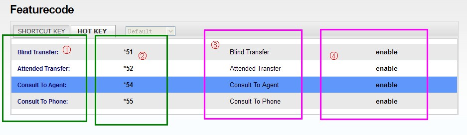
Menú lateral (Menu / Sub Menu)¶
Dos pantallas relacionadas, para quien personaliza o extiende módulos del sistema:
- Menú de categorías (
Sistema → Menú): almacena las categorías del menú lateral del backend y su orden de aparición. El nombre de categoría debe empezar con letra y solo usar letras, números y guion bajo; para mostrar el nombre traducido hay que agregarlo al archivodefault.podel idioma correspondiente. Permite reordenar categorías arrastrándolas y guardando el nuevo orden.
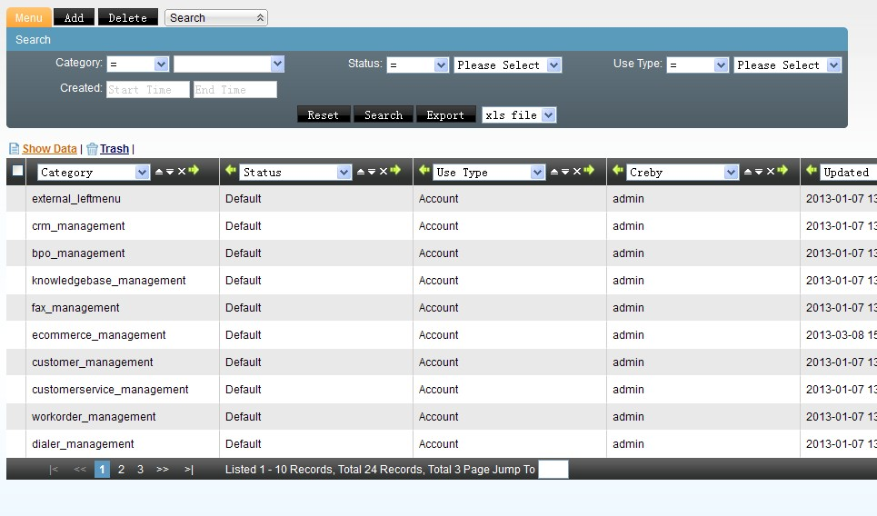
- Submenú (
Sistema → Submenú): almacena los módulos (páginas) dentro de cada categoría y su orden. Al agregar un módulo se define: la URL de la página (completa si es externa, o solo el nombre del controlador si es interna), la categoría a la que pertenece, si aparece en backend/frontend/ambos, los permisos CRUD+exportación que aplican (si es página interna del framework — genera automáticamente el SQL de permisos), y opcionalmente un rol al que asignarle de inmediato el permiso sobre esa página nueva. También permite reordenar por arrastre dentro de cada categoría. Los registros del sistema por defecto se muestran en gris y no son editables.
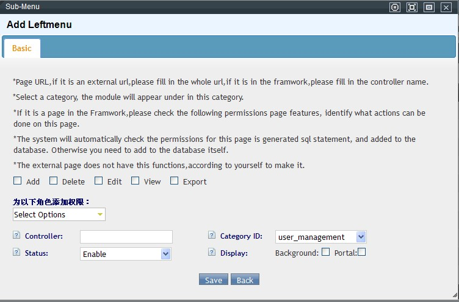
Registro de auditoría y eventos (Log)¶
Dos pantallas de solo lectura, separadas de los reportes de negocio de la sección 4.8 Reportes, estadísticas y financiero porque no miden desempeño — registran quién hizo qué en el sistema, para auditoría.
- Información de log (
Log → Logs): registra el inicio/cierre de sesión de cuentas y agentes, y las altas/bajas de datos hechas desde cualquier módulo. Campos: cuenta (usuario o agente que ejecutó la acción), acción (login,add,update,delete,adduser,logout), módulo de origen (desde qué pantalla se ejecutó), número de agente (si aplica), tipo de login, IP, nota (detalle de la operación) y fecha de creación. - Log de eventos de llamada (
Log → Call Event): registra los eventos de trabajo de un agente durante su turno — timbrado, contestar, colgar, conferencia, llamada entrante, pausar/continuar llamada, check-in/check-out, pausar/cancelar pausa, inicio/fin de gestión posterior (ACW) en sus distintas variantes, bloqueo/desbloqueo de pantalla, cambio de modo de trabajo (entrante+saliente / solo entrante / solo saliente), y los eventos propios del marcador predictivo (timbrado y respuesta del cliente, respuesta del agente, entrada al destino). Campos: equipo/grupo/número de agente, número activo (el número de origen del evento — agente o cliente), origen (cliente que llama, agente, parte en consulta, cliente llamado, fin de llamada, marcador predictivo, servicio de voz), evento, ID único, descripción (por ejemplo, el motivo de un check-out: normal, forzado por timeout, o por operación de sistema) y fecha de creación.
Ambos registros respetan el período de retención configurado en Configuración → Procesamiento de grandes datos (ver tabla de "Configuración general" arriba) — pasado ese plazo, las entradas más antiguas se purgan automáticamente.
Instalación y actualización de módulos (System Modules)¶
Ve a Módulos del sistema. Muestra la versión actual del sistema, los módulos instalados y los módulos disponibles para instalar.
Warning
Instalar un módulo nuevo requiere iniciar sesión con la cuenta de administrador del sistema — no funciona con una cuenta de administrador de equipo.
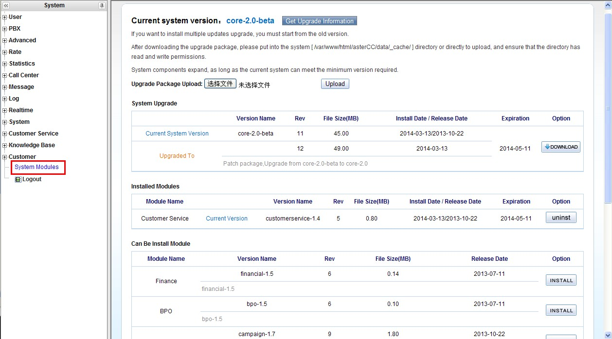
Para instalar un módulo disponible, basta con hacer clic en su botón Instalar; el sistema muestra una confirmación y, al terminar, el menú lateral correspondiente aparece automáticamente sin necesidad de configuración adicional.
- Si hay una versión nueva disponible, se puede descargar automáticamente (si
Descarga automática de paquete de actualizaciónestá activo en Configuración → avanzada) o descargar manualmente desde la propia pantalla. - El paquete de actualización debe colocarse en el directorio de caché de datos del sistema (ej.
/var/www/html/asterCC/data/_cache/en la instalación de referencia) — vía FTP o subiéndolo con el botón de la propia pantalla. - Al reabrir la pantalla con el paquete presente, aparece el botón Actualizar.
Problemas conocidos durante la actualización y su solución:
| Problema | Causa / solución |
|---|---|
| Error de verificación MD5 del paquete | El paquete descargado está corrupto o incompleto — elimínalo del directorio de caché, descárgalo de nuevo e intenta otra vez |
| Error de archivo de configuración | Mismo procedimiento: eliminar, volver a descargar, reintentar |
| El proceso se detiene por permisos | El sistema no tiene permiso de escritura sobre el archivo de la aplicación — por SSH, ejecutar chmod 777 /var/www/html/asterCC/app/app_controller.php (ajustar la ruta a la instalación real) y reintentar |
413 Request Entity Too Large |
El paquete excede los límites de subida configurados en PHP y en el servidor web — en PHP, editar upload_max_filesize en php.ini; en Nginx, editar client_max_body_size en nginx.conf (subir ambos por encima del tamaño del paquete, ej. de 20M a 80M) y reiniciar Nginx (service nginx restart) |
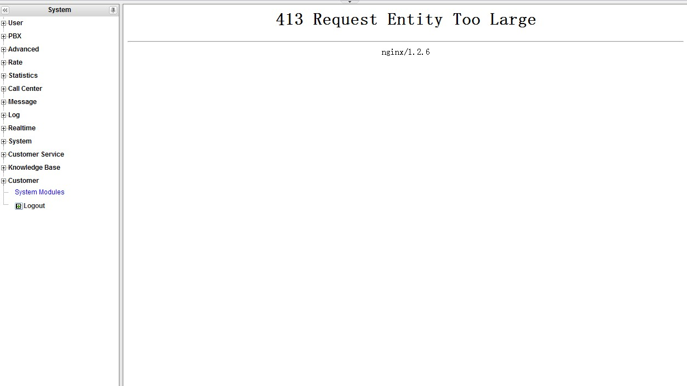
Referencia rápida¶
| Tarea | Dónde |
|---|---|
| Programar respaldo automático | Configuración de sistema → Gestión de planes de respaldo |
| Descargar/eliminar/restaurar un respaldo ya generado | Sistema → Archivos de respaldo |
| Ejecutar comando de consola de Asterisk | Sistema → Comandos del núcleo |
| Ver log del núcleo | Sistema → Log del núcleo |
| Limpiar registros corruptos de llamada en curso | Sistema → Curpbxcdr Subs |
| Limpiar números de marcación atascados | Sistema → Curspools |
| Administrar idiomas del sistema | Sistema → Idioma |
| Configurar red/DNS/interfaces | Sistema → Red |
| Dar de alta un servidor PBX adicional | Sistema → Servidores PBX |
| Configurar archivado/eliminación de grabaciones | Configuración de sistema → Gestión de archivos de grabación |
| Ver quién inició sesión o modificó datos | Log → Logs |
| Ver eventos de trabajo de un agente (timbrado, pausas, ACW, check-in/out) | Log → Call Event |
| Ajustar parámetros generales (SIP, negocio, retención de datos) | Sistema → Configuración |
| Editar teclas rápidas / hotkeys de teléfono | Configuración de sistema → Teclas rápidas del sistema |
| Agregar/reordenar categorías o módulos del menú lateral | Sistema → Menú / Submenú |
| Instalar o actualizar un módulo del sistema | Módulos del sistema |
Fuentes¶
raw/en/module_manual/system.txtraw/en/module_manual/system/backup_plans.txtraw/en/module_manual/system/corecmd.txtraw/en/module_manual/system/corelog.txtraw/en/module_manual/system/curpbxcdr_subs.txtraw/en/module_manual/system/curspools.txtraw/en/module_manual/system/featurecode.txtraw/en/module_manual/system/info_backup.txtraw/en/module_manual/system/languages.txtraw/en/module_manual/system/leftmenu.txtraw/en/module_manual/system/leftmenu_categories.txtraw/en/module_manual/system/network.txtraw/en/module_manual/system/pbx_servers.txtraw/en/module_manual/system/recording_plan.txtraw/en/module_manual/system/settings.txtraw/en/module_manual/system_modules/module_installation.txtraw/en/module_manual/log.txtraw/en/module_manual/log/logs.txtraw/en/module_manual/log/call_event.txtraw/zh/模块使用说明/系统日志.txtraw/zh/模块使用说明/系统日志/日志信息.txtraw/zh/模块使用说明/系统日志/坐席事件日志.txtraw/zh/模块使用说明/系统模块管理.txtraw/zh/模块使用说明/系统模块管理/安装模块.txtraw/zh/模块使用说明/系统设置.txtraw/zh/模块使用说明/系统设置/pbx服务器管理.txtraw/zh/模块使用说明/系统设置/内核命令提示符.txtraw/zh/模块使用说明/系统设置/内核日志.txtraw/zh/模块使用说明/系统设置/备份文件管理.txtraw/zh/模块使用说明/系统设置/备份计划管理.txtraw/zh/模块使用说明/系统设置/左侧列表模块管理.txtraw/zh/模块使用说明/系统设置/左侧列表类别管理.txtraw/zh/模块使用说明/系统设置/录音文件管理.txtraw/zh/模块使用说明/系统设置/拨号错误处理.txtraw/zh/模块使用说明/系统设置/系统热键.txtraw/zh/模块使用说明/系统设置/系统设置.txtraw/zh/模块使用说明/系统设置/网络配置.txtraw/zh/模块使用说明/系统设置/语言管理.txtraw/zh/模块使用说明/系统设置/错误通话数据处理.txtraw/zh/模块使用说明.txtraw/zh/模块使用说明/基本模块.txt